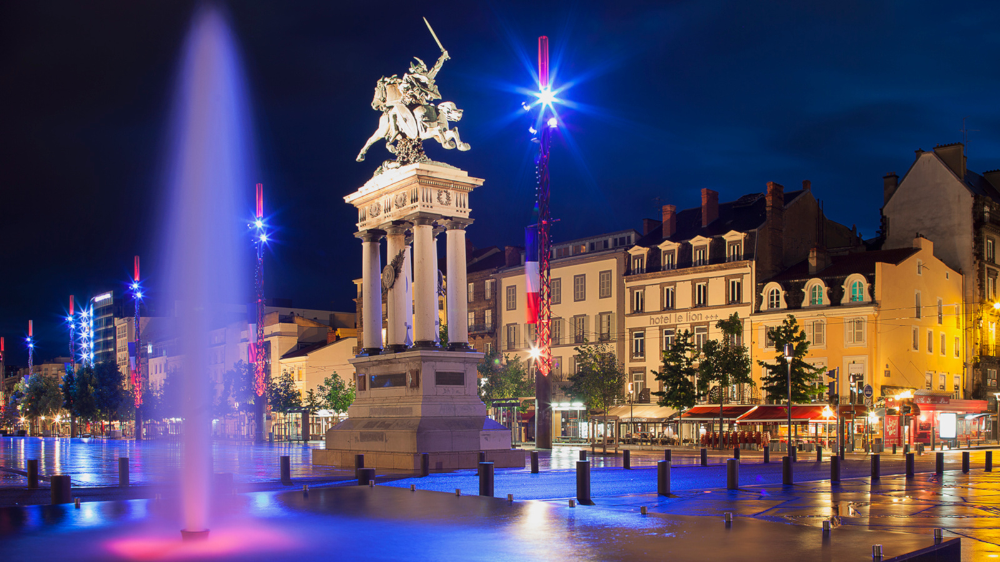

L'Auvergne ! Avec son environnement majestueux ne laissera personne
indiférrent
Le département du Puy-de-Dôme a connu 2 166 heures d'ensoleillement en
2020, contre une moyenne nationale des départements de 2 089 heures de
soleil. Le département du Puy-de-Dôme a bénéficié de l'équivalent de 90
jours de soleil en 2020. Le département se situe à la position n°28 du
classement des départements les plus ensoleillés. Le département du
Puy-de-Dôme a connu 511 millimètres de pluie en 2020, contre une moyenne
nationale des départements de 773 millimètres de précipitations. Le
département se situe à la position n°92 du classement des départements les
plus pluvieux.

Le Puy-de-Dôme est un département du centre de la France situé dans la
région administrative Auvergne-Rhône-Alpes. Son nom lui vient du volcan
endormi : le puy de Dôme.
Il correspond de façon assez éloignée à l'ancien Bas-Pays d'Auvergne, une
subdivision administrative de la province d'Auvergne sous l'Ancien
Régime.
Ses habitants s'appelaient les Puydomois, appellation entérinée par le
conseil général en décembre 2005, puis modifiée, au printemps 2006, à la
suite de nombreux courriers reçus au siège du conseil général.
L'appellation officielle aujourd'hui, reproduite sur tous les documents,
est Puydômois. Puydômoise. La population s'estime à 659 048 habitants
(2018). L'Insee et la Poste attribuent au département le code 63.
Le centre du département, la plaine de Limagne, vallée de l'Allier et de
ses affluents, constitue un fossé tectonique où alternent, d'ouest en est,
coteaux calcaires et volcaniques avec la plaine marneuse puis sableuse.
C’est la région la plus riche du pays. En Auvergne, 2 hypothèses ne sont
pas de trop : avec plus de 200 volcans, on ne sait plus où poser le pied.
La grand-place de Clermont-Ferrand est un volcan. C’est sur un volcan – le
Puy-de-Dôme